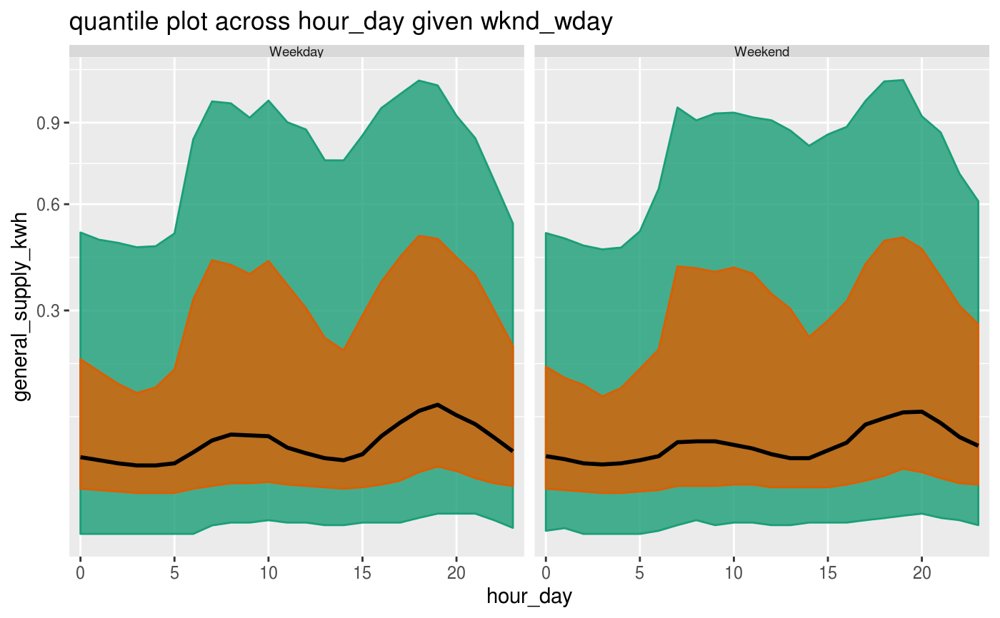
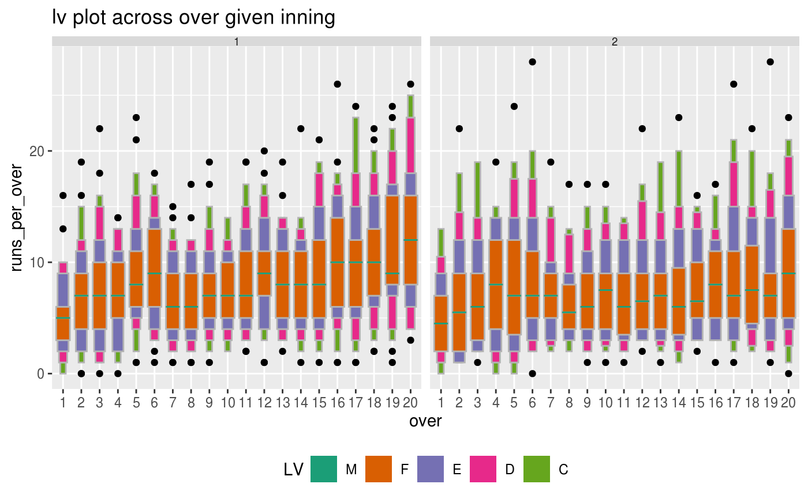

Create time granularities that accommodate for periodicities in data, both single and multiple order up. Periodic ones might include time granularities like minute of the day, hour of the week and aperiodic calendar categorizations may include day of the month or week of the quarter. For non-temporal data, supports only periodic deconstructions.
create_gran( .data, gran1 = NULL, hierarchy_tbl = NULL, label = TRUE, abbr = TRUE, ... )
| .data | A tsibble object. |
|---|---|
| gran1 | the granularity to be created. For temporal data, any combination of "second", "minute", "qhour", "hhour", "hour", "day", "week", "fortnight ,"month", "quarter", "semester" or "year" can be chosen in the form of finer to coarser unit. For example, for the granularity hour of the week, value is "hour_week". |
| hierarchy_tbl | A hierarchy table specifying the hierarchy of units and their relationships. |
| label | Logical. TRUE will display the month as an ordered factor of character string such as "January", "February". FALSE will display the month as an ordered factor such as 1 to 12, where 1 stands for January and 12 for December. |
| abbr | logical. FALSE will display abbreviated labels. |
| ... | Other arguments passed on to individual methods. |
A tsibble with an additional column of granularity.
library(dplyr)#> #>#> #> #>#> #> #>library(ggplot2) library(lvplot) # Search for granularities smart_meter10 %>% search_gran(highest_unit = "week")#> [1] "hhour_hour" "hhour_day" "hhour_week" "hour_day" "hour_week" #> [6] "day_week"# Screen harmonies from the search list # \dontrun{ smart_meter10 %>% harmony( ugran = "day", filter_in = "wknd_wday" )#> # A tibble: 7 x 4 #> facet_variable x_variable facet_levels x_levels #> <chr> <chr> <int> <int> #> 1 hour_day hhour_hour 24 2 #> 2 wknd_wday hhour_hour 2 2 #> 3 wknd_wday hhour_day 2 48 #> 4 hhour_hour hour_day 2 24 #> 5 wknd_wday hour_day 2 24 #> 6 hhour_hour wknd_wday 2 2 #> 7 hour_day wknd_wday 24 2# } # visualize probability distribution of # the harmony pair (wknd_wday, hour_day) smart_meter10 %>% filter(customer_id == 10017936) %>% prob_plot( gran1 = "wknd_wday", gran2 = "hour_day", response = "general_supply_kwh", plot_type = "quantile", quantile_prob = c(0.1, 0.25, 0.5, 0.75, 0.9) ) + scale_y_sqrt()#> #>#> #> #>cricket_tsibble <- cricket %>% mutate(data_index = row_number()) %>% as_tsibble(index = data_index) hierarchy_model <- tibble::tibble( units = c("index", "over", "inning", "match"), convert_fct = c(1, 20, 2, 1) ) cricket_tsibble %>% create_gran( "over_inning", hierarchy_model )#> # A tsibble: 8,560 x 12 [1] #> season match_id batting_team bowling_team inning over wicket dot_balls #> <dbl> <dbl> <chr> <chr> <dbl> <dbl> <dbl> <dbl> #> 1 2008 2 Chennai Sup… Kings XI Pu… 1 1 0 4 #> 2 2008 2 Chennai Sup… Kings XI Pu… 1 2 0 2 #> 3 2008 2 Chennai Sup… Kings XI Pu… 1 3 1 4 #> 4 2008 2 Chennai Sup… Kings XI Pu… 1 4 0 3 #> 5 2008 2 Chennai Sup… Kings XI Pu… 1 5 0 3 #> 6 2008 2 Chennai Sup… Kings XI Pu… 1 6 0 3 #> 7 2008 2 Chennai Sup… Kings XI Pu… 1 7 1 1 #> 8 2008 2 Chennai Sup… Kings XI Pu… 1 8 1 3 #> 9 2008 2 Chennai Sup… Kings XI Pu… 1 9 0 1 #> 10 2008 2 Chennai Sup… Kings XI Pu… 1 10 0 2 #> # … with 8,550 more rows, and 4 more variables: runs_per_over <dbl>, #> # run_rate <dbl>, data_index <int>, over_inning <fct>cricket_tsibble %>% filter(batting_team %in% c("Mumbai Indians", "Chennai Super Kings"))%>% prob_plot("inning", "over", hierarchy_model, response = "runs_per_over", plot_type = "lv")# Validate if given column in the data set # equals computed granularity validate_gran(cricket_tsibble, gran = "over_inning", hierarchy_tbl = hierarchy_model, validate_col = "over" )#> [1] TRUE